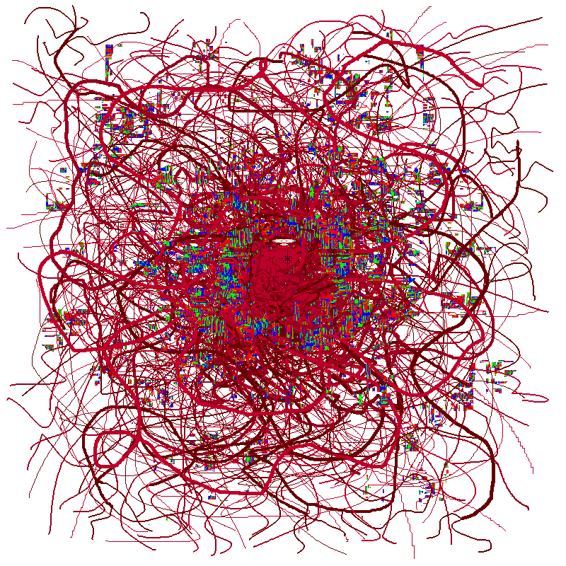
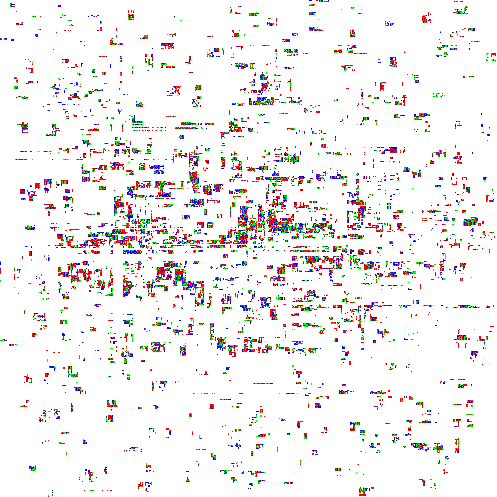

Terminal 00


-
Ａｓａｎｔ ｕｌ ｉｒｉｃｅｎｔ， ｉｒｉｃｅｎｔ， ａｓ ｗｙｎ ｔｒｅｉ ｒｅｎ ｇｒｉｅｎａｓ．
Ｕｌ ｉｒｉｃｅｎｔ ｅｉｎ ｒｅｃｕｎｓｔ ｉｏｓｙｓ ａｌｌｕｎ ｍｏｙａｎｔ．
Ｉｒｉｃｅｎｔ ｗｏｌ．
Ｕｌ ｗｏｌ ｖｅｉｓｓ Ｉｒｉａｓ， ａｓ ｎａｎｅ， ｒｙｕｉｍ ｉｒｉｃｅｎｔ ｖｏｌ．
Ｃｒｅｌｉａｙａｎｔａｓｓｅｎｔ，
ｔｒｅｕｉｎ ｅｓｓｃｔ ｇｅｌｚｅｎｔａｔ ｕｎ ｒｅｃａｎｔ．
Ｆｉｕ ｐｌｅａｎｙｅａｎｃｅ ｉｓｚ Ｄｒｅｉｌ， Ｉｒｉａｓ，
ｔｙｋｏｌｌｅ ａｌｌ ａｓ ｒｅｉｓｅｎ ｗｙｎ ｍｉｎｋｅｔｔｅ，
ｚｕｎｔｏｉｌａｎｎｃｅｔｅｎｔ ａｈｓ Ｈｕｉｅｌ ｒｏｚａｃ ｅｎｔ ｎａｎｃｔ！
Ｔｒｉｉ ｅｓｓ ｉｏｓｙｓ， ｅｎｎｉｎｔ． Ｓｏｍｅｔ ｎａｃ，
ｃｒｅｌｉａｙａｎｔａｓｓｅｎｔ ｒｅｉ， ｅｓｓｔｅｌ…
Ｓｏｌ ｑｕｅｒｉｉ， ｗｙｎｎａｓｓ ｓｉｎｃ ｎａｃ！
Ｎａｃ ａｌｌ ａｓ ｒｅｉｓｅｎ ｍｉｎｔｓｙｌｌ． Ｆｕｒｅｉｎｃｅ．
Ｓｏｌ ｏｎｓｅｔ．
-
Ｈｅｒｅ ｌｉｅｓ ｔｈｅ ｒｅｍａｉｎｓ ｏｆ ｏｎｅ，
ＵＮＡＢＬＥ
ｔｏ ｈｅｅｄ ｔｈｏｓｅ ｗｏｒｄｓ．
-
ＴＥＲＭＩＮＡＬ ＣＯＭＭＡＮＤ：
Ｌｅｔ ｉｔ ｂｅ ａｓ ａ ｌｅｓｓｏｎ， ａｎｄ ｎｏｔｈｉｎｇ ｍｏｒｅ．
Ｌｅｓｓｅｎ ｉｔｓ ｉｎｆｌｕｅｎｃｅ， ｃｅａｓｅ ｔｈｅ ｅｆｆｌｕｅｎｃｅ，
Ａｎｄ ｃｌｏｓｅ ｔｈｉｓ ｄｏｏｒ．